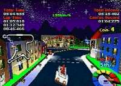

|

Review

Game Type: 3D Racing
Basically Wipeout with cartoony cars, settings, and weapons.
Gameplay: 85/100
Like Wipeout (the comparison is inevitable and you'll see it many more
times in this review) the control takes getting used to. I find the
control unbearable on any car but those with the best handling (I use
Bolbox most) and even then you'll be hitting walls for a while. The
brakes are needed to clear the turns more in this game than any other I
can remember. The weapons and powerups range from highly useful (Wonder
Clock) to very cool (Missiles which you guide to their target via the
missile-cam) to utterly worthless (Dynamite). There is a two-player mode
via the link cable which I have been unable to try.
Probably my favorite part about MTGP2 isn't the game itself but the
"Goodies", little mini-games and options you earn access to by beating
the game on different levels. There are 5 extra tracks which are really
just reverses of existing tracks but seem like much more, partly thanks to
the new graphics and objects in them. There are 3 new cars including a
motorcycle and locomotive. There's a racing sim completely different from
the main game where you do your best to keep one of two realistic cars
from fishtailing off the track (the course is derived from one of the main
game's tracks with all the cartoony stuff taken out, but the graphics engine
and handling of the cars is totally different). There's the most
graphically advanced game of Battleship you will ever play. And best of
all, there's an awesome one-on-one 3D tank game. The Battleship and
tank games can be played with linked Playstations, and the latter offers
so many creative ways to destroy your opponent (rubber bullets, a catapult,
and the missile-cam among others) that it should give Faceball 2000 a run
for its money as a 2 player game.
Graphics: 95/100
The track designs are totally surreal and absolutely breathtaking. More
than once on the transparent floors of the Sky Coaster I have crashed my
car from staring at the incredible view. The entire rainbow of colors is
often represented on the screen all at once. Popup is present but isn't
especially annoying. The framerate isn't great but is more than adequate.
Breaking away from the main game for a moment... The 3D tank game has astoundingly, amazingly smooth animation. (Yep, I used
two modifiers for that "smooth" adjective, this is the best framerate I've
ever seen). The tradeoff is the small number of polygons and the lack of
texture mapping, but it shows what wonders the PS can work when a game is
designed with only animation in mind.
Sound: 50/100
Average. The music isn't horrible but does nothing to catch my
attention, the announcer's voice isn't unbearable but is decidedly silly
(goes with the game), the sound effects aren't 8-bit but they don't really
thump my speakers.
Overall: 90/100
I tried not to let the mini-games influence my overall rating, but they
probably did. Still, on its own merits MTGP2 itself is a more than worthy
racer. I didn't like it as well as the intense Wipeout gameplay wise but it
offers more tracks and a far greater variety of cars to master. Oh, and the
mini-games are a nice bonus. No racing game lover should go without this
one.
|